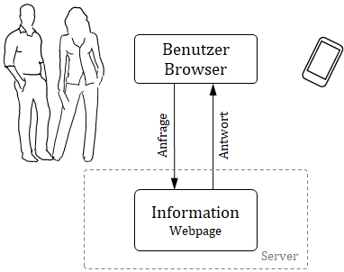
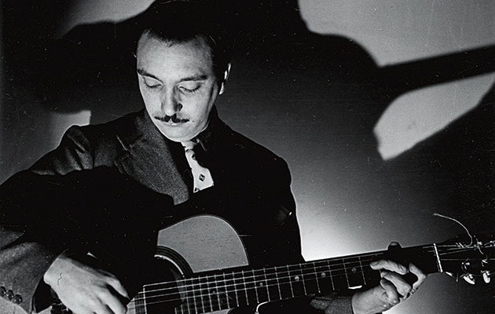
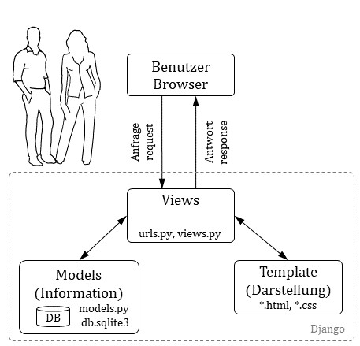

Visualisierung 1
Um entscheiden oder handeln zu können sind Informationen notwendig. Z.B. Energiemonitoring um die Effizienz zu beurteilen oder ein Niederschlagradar um eine geeignete Tourenwahl zu treffen. Werden Berechnungen oder Modellierungen ausgeführt so helfen diese Informationen ebenfalls um Entscheidungen zu fällen. Im Ingenieurwesen sind Informationen in der Regel als ein Diagramm dargestellt. In den beiden Tutorials auf pv4ing.ch wurden die für uns relevanten Diagramme vorgestellt. Zusätzlich sollte bei einer Visualisierung noch ein erklärender Text hinzu, nicht zu viel aber ein bisschen macht Sinn.
Denken wir an Energiemonitoring, so sollte die Visualisierung günstig sein, d.h. kein zusätzlicher Bildschirm und PC um den Zählerstand darzustellen. Das günstigste Display ist dies, welches wir bereits dabei haben, das Mobil oder ein Notebook.
Deshalb bauen wir nicht ein eigenes GUI (Graphical User Interface), sondern erstellen eine Webpage. Auf der Messeinheit (z.B. RaspberryPi) läuft ein Server, welcher die Information als Webpage darstellt. Mit dem Mobil oder dem Notebook wird dieser Server "angesurft", welcher die Informationen als Webpage über einen Browser darstellt.
Dabei ist neben der eigentlichen Information, die Darstellung der Webpage wichtig um eine gute Lesbarkeit auf unterschiedlichen Endgeräten (PC, Notebook, Smartphone) zu erreichen. Dies wird als Responsiv Design bezeichnet.

Leitsatz
Das Bauen einer Website kann zu einer sehr aufwändigen Sache werden, vor allem wenn wir uns in der Gestaltung verlieren. Deshalb einige Leitsätze:
- Konzentration auf das Wesentliche: Was ist die Kernaussage der Webpage? Design wird "zugekauft"
- Effektiv und wirksam
- Für jeden Handgriff das richtige Werkzeug
Der erste Punkt hat nichts mit programmieren oder Webpage zu tun. Hierfür nimmt man Papier und Bleistift um die Kernaussage zu skizzieren. Eine Verschriftlichung der Kernaussage ist sehr empfehlenswert! Auch hier zählt: Weniger ist mehr. Ein Konzept mit mehr als einem A4 Papier muss nochmals überarbeitet werden. Ebenfalls wenn das Konzept in einer Datei beschrieben wird.
Beim zweiten Punkt "Effektiv und wirksam" geht es darum, in kurzer Zeit eine Webpage zu erstellen, mit Wirkung. Wirkung kommt durch Punkt 1, Konzentration auf das Wesentliche und dies zielführend dargestellt. Effektiv heisst Einfachheit im Aufbau mit wenig Code. Dies wird durch Python unterstützt da Python selbst dieses Ziel verfolgt beschrieben als "The Zen of Python":
- Beautiful is better than ugly.
- Explicit (ausdrücklich) is better than implicit (indirekt).
- Simple is better than complex.
- Complex is better than complicated.
- Flat is better than nested (verschachtelt).
Es gibt noch weitere Punkte, gib auf der Python Konsole folgendes ein:
import this
Der dritte Punkt "die richtigen Werkzeuge" zu verwendet unterstützt ein effektives arbeiten. Das heisst auch, dass wir nicht dasselbe Arbeit zweimal machen. Ein geschriebener Code sollte mehrmals für unterschiedliche Webpages einsetzbar sein. Dieses Prinzip wird als "Don't repeat yourself (DRY)" bezeichnet. DRY heisst nicht nur Effizienz indem der Code nur einmal geschrieben wird, sondern heisst auch weniger Fehlermöglichkeiten, bessere Wartbarkeit, weniger Abhängigkeiten. Deshalb verwenden wir als Werkzeug ein Webframework.
Webframework
Ein Webframework ist ein Baukastensystem mit einer Vielzahl nützlicher Werkzeuge wie Benutzerverwaltung, Formulare, Upload von Dateien und einen integrierter Entwicklungsserver um die Webpage schnell und einfach darzustellen. Die Teile dieses Baukastensystems können einmal erstellt, für unterschiedliche Anwendungen eingesetzt werden.
Der erste Schritt hierzu ist die Auftrennung von Information und der Darstellung, wodurch beide Blöcke unabhängig voneinander wieder verwendbar sind. Dieselbe Darstellung mit anderen Informationen oder dieselben Informationen bei unterschiedlicher Darstellung.

Als Webframework verwenden wir Django basierend auf Python. Dieses Framework wird bei hunderten von Webpages eingesetzt wie Youtube, Dropbox, Google, Netflix, Spotify, Pinterest, NASA, u.v.m. Der Untertitel von Django heisst "The web framework for perfectionists with deadlines" und zeigt die Stärken von Django, wie:
- Schnell umsetzbar mit wenig Code
- Sicherheit inbegriffen
- Skalierbar
- Vielfach erprobt und bewährt
Django ist benannt nach dem französischen Gitarristen Django Reinhardt.

Architektur Django
Die Architektur von Django teilt die Darstellung (Template) von den Informationen (Model), welche, je nach Anfrage (request) unterschiedlich zusammengebaut (View) werden. Das Konzept wird als MTV bezeichnet für Model, Template, View und ist eine lose gekoppelte Struktur, sodass einzelne Teile wiederverwendet werden können.

Views
Die Views ist die Programmeinheit bei Django, welche die Webpage zusammenbaut und darstellt, deshalb views. Hier werden auch die Anfragen (request) behandelt und die Webadresse geprüft.
In der allgemeinen Literatur wird das Django-MTV-Modell häufiger als MVC-Modell bezeichnet für Model, View, Control. Hier entspricht View dem Django-Template und Control der Django-Views.
Template
Das Template beinhaltet die Darstellung, das Design der Webpage. Dieses Template werden wir nicht bauen, sondern fertig beziehen. Beispiel für eine Quelle ist www.html5up.net.
Models
Unter Models werden die Informationen verstanden. Diese werden als Daten in einer Datenbank abgelegt. Um auf die Daten zugreifen zu können sind Datenbankabfragen wie z.B. SQL notwendig, welche kompliziert sind und Django soll jedoch einfach und schnell umsetzbar sein. Deshalb wird die Information als ein "Model" definiert umso auf die Daten zugreifen zu können unabhängig der Datenbankstruktur im Hintergrund. Modelle werden wir erst im Tutorial "Visualisierung 2" vorstellen.
Nun wird eine Webpage erstellen. Zuerst richten wir und die Werkstatt ein (Leitsatz 3) um effektiv und wirksam (Leitsatz 2) arbeiten zu können. Anschliessend erstellen wir ein Django-Projekt, die eigentliche Webpage.
DjangoGirls
Dieses Tutorial baut auf dem sehr empfehlenswerten Tutorial von DjangoGirls auf, welches in vielen Sprachen verfügbar ist. Nach eigenem durcharbeiten von Videos, Bücher, Webpages für einen Django-Einstieg bietet DjangoGirls den flüssigsten Einstieg in Django.
- Für Einsteiger: Wenn du grundlegendes zum Internet usw. erfahren möchtest empfiehlt sich der Einstieg der Django Girls Tutorials und den verlinkten Videos.
- Für Fortgeschrittene: Wie die Webpage veröffentlicht wird ist ebenfalls unter "Deployment" in den Tutorial erklärt. Es wird der kostenfreie Django-Server pythonanywhere verwendet.
1. Einrichten der Werkstatt
Für die Installation von Django führen wir folgendes Kommando aus, sofern wir mit dem Anaconda Paket arbeiten:
conda install django
Für eine richtige Werkstatt sind noch zwei Punkte notwendig: Erstens eine virtuelle Umgebung und zweitens git, eine "Verzeichnis" bzw. Code-Ablage um als Team gemeinsam an einem SW-Projekt zu arbeiten. Jedoch machen wir dies in einem anderen Tutorial und sehen uns nun die Webpage-Erstellung an.
2. Lokales Django-Projekt erstellen
Wir erstellen ein Webpage-Projekt (Django-Projekt) auf der nur eine Anwendung (App) läuft, ein Diagramm mit einer Sinusfunktion. Wir erstellen ein Django-Projekt energieDigital.
xxxxxxxxxxdjango-admin startproject energieDigital .
Der Punkt . ist sehr wichtig, weil er dem Skript mitteilt, dass Django im aktuellen Verzeichnis installiert werden soll. Ansonst würde ein Ordner mit dem Projektnamen angelegt und darunter das Projekt.
Django organisiert sich mit einer Ordnerstruktur worin vordefinierte Dateien liegen. Somit weiss Django wo welche Informationen, Funktionen und Daten liegen ohne dass wir dieses genauer angeben müssen. Die relevanten Dateien sind:
- settings.py: für Einstellungen
- urls.py: für die Auswertung der eingehenden urls und dem Starten der notwendigen Funktionen
- views.py: Dort wird die Webpage "zusammengebaut". Diese Datei legen wir neu an.
- *.html: Das Template mit dem Design
Sieh dir die Ordnerstruktur und die Dateien an. Wir machen einige Anpassungen im vordefinierten Projekt.
Einstellungen
In der Datei "settings.py" werden die Grundeinstellung der Webpage vorgenommen. Wir werden später die Seite als "localhost" mit 127.0.0.1 aufrufen oder über die ip-Adresse des Rechners auf dem der Entwicklungsserver läuft. Um die ip-Adresse zu ermittelt importieren wir die Bibliothek "socket". Anschliessend kommen die drei Code-Zeilen zur ip-Adressermittlung hinzu. Bei "ALLOWED_HOSTS" ergänzen wir die zwei ip-Adressen.
ximport socket# Ermittelt IP-Adresses = socket.socket(socket.AF_INET, socket.SOCK_DGRAM) # erstellt Netzwerkverbindungs.connect(('1.1.1.1',1)) # fiktiver Internetzugriffip = s.getsockname()[0] # ermittelt IP-AdresseALLOWED_HOSTS = ['127.0.0.1', ip]Wir werden eine App erstellen, welches "energieDigital" heisst (gleich wie das Webpage-Projekt). Diese müssen wir hier registrieren, als neuer Baustein in unserem Baukastensystem.
xxxxxxxxxxINSTALLED_APPS = ['django.contrib.admin','django.contrib.auth','django.contrib.contenttypes','django.contrib.sessions','django.contrib.messages', 'django.contrib.staticfiles','energieDigital',]Wir verwenden später Informationen welche nicht dynamisch angepasst werden, sondern statisch sind, wie z.B. Bilder oder Darstellungscode (CSS, JS). Hierfür definieren wir die Webadresse für den Server (STATIC_URL) und den Ordner (STATIC_ROOT) worin diese Dateien abgelegt werden. Den Ordner "static" legen wir dann später noch an.
xxxxxxxxxxSTATIC_URL = '/static/'STATIC_ROOT = os.path.join(BASE_DIR, 'energieDigital/static/')
Erste Seite
Wir wollen eine App "test" erstellen mit dem Link: 127.0.0.1:8000/test. Diese Seite soll ein Eingabefeld für eine Zahl haben. Diese Zahl gibt an wieviel Sinuszyklen in einem Diagramm gezeichnet werden sollen. Diese Zahl wird vom Browser zum Server gesendet. Dort wird in python die "testfunktion" aufgerufen und mit matplotlib ein Diagramm erstellt und als sinus.jpg-Datei abgespeichert. Anschliessend überarbeitet der Server die Test-Webpage, sodass das Diagramm enthalten ist und sendet diese zurück zum Browser, wo das Bild sinus.jpg dargestellt wird.
Unter url versteht man die Internetadresse (Uniform Resource Locator). Wir verwenden den lokalen Django-Entwicklungsserver, welcher die Standardadresse "127.0.0.1:8000" verwendet, wir wollen jedoch "127.0.0.1:8000/test", welches wir in der urls.py angegeben wird. Öffne die energieDigital/urls.py-Datei und passe den Code an.
xxxxxxxxxxfrom django.contrib import adminfrom django.urls import pathfrom . import viewsurlpatterns = [ path('test/', views.testfunction), path('admin/', admin.site.urls),]Wenn diese Adresse beim Server ankommt wird die Python-Funktion "testfunktion" ausgeführt. Diese erstellen wir noch in der Datei views.py. Von dort importieren wir diese "testfunktion". Bevor wir die testfunktion in views.py definieren erstellen wir ein html-Template test.html. Wenn nicht genauer angegeben sucht Django das html-Template im Ordner templates. D.h. wir legen diesen Ordner an. Zusätzlich legen wir noch den Ordner static an, welcher wir später brauchen.
xxxxxxxxxxenergieDigital├── static└── templates
Als nächstes erstellen wir eine Datei test.html.
xxxxxxxxxx{% load static %}<html> <head> <title>Die ist eine Testseite</title> </head> <body> <form method="post" enctype="multipart/form-data"> {% csrf_token %} <input type="number" name="nCycleHin" value={{ nCycleZurueck }}> <br> <img src="{% static "sinus.jpg" %}"> <form> </body></html>Im html-Code sind zwei Django-Kommandos eingebaut:
{% load static %} Hier wird der Pfadname geladen, wo die statischen Dateien liegen. Diesen haben wir in settings.py definiert mit STATIC_ROOT. Es ist der so eben angelegt Ordner static. Nachfolgend wird der Dateiname mit dem Pfadnamen gebaut durch "{% static "sinus.jpg" %}". Somit können wir später das Projekt auf irgendeinen Server stellen und die Ordnerstruktur passt, weil wird dies nur an einer Stelle definiert haben, in settings.py.
{% csrf_token %} Dies ist eine Sicherungsfunktion von Django, die Cross Site Request Forgery protection. Bei einer Server-Anfrage (request) wird hier ein csrf-Code mitgeschickt. Wenn später über "post" Daten vom Browser zum Server gesendet werden, so wird dieser csrf-Code mit gesendet und der Server, weiss dann, dass die erhaltenen Daten sicher sind.
Nun definieren wir die testfunktion in views.py. Hier speichern wir die sinus.jpg-Datei im Ordner "static", damit das html-Template die Datei später findet. Wie erwähnt ist der Pfadnamen in settings.py definiert. Von dort importieren wir diesen mit settings.STATIC_ROOT. Mit der Funktion "render" aktualisieren wir die "test.html". Hier senden wir auch dynamische Daten (nCycleHin) ans html-Template. Die Variablennamen findest du auch im test.html.
xxxxxxxxxx# -*- coding: utf-8 -*-from django.shortcuts import renderimport numpy as npimport matplotlib.pyplot as pltfrom django.conf import settingsdef testfunction(request): if request.POST: # wenn "Enter" gedrückt wird dic = request.POST # Werte von Page übernehmen print('mal sehen was das ist: ' + str(dic)) nCycle = int(dic['nCycleHin']) else: nCycle = int(0) x = np.linspace(0,2*3.14*nCycle,1000) y = np.sin(x) filename = settings.STATIC_ROOT + 'sinus.jpg' plt.plot(x,y) plt.savefig(filename) plt.clf() # Figure-Objekt schliessen return render(request, 'test.html', {'nCycleZurueck': nCycle})runserver
Nun starten wir die Webpage und geben auf dem Terminal folgendes Kommando ein:
xxxxxxxxxxpython manage.py runserver
Auf dem Terminal erscheinen folgende Zeilen. Es wird auch die url-Adresse der Webpage angegeben generiert vom Entwicklungsserver (development server). Dieses geben wir im Browser ein und wir können unsere Seite ansehen.
xxxxxxxxxx>>python manage.py runserverWatching for file changes with StatReloaderPerforming system checks...System check identified no issues (0 silenced).Django version 2.2.5, using settings 'energieDigital.settings'Starting development server at http://127.0.0.1:8000/Quit the server with CTRL-BREAK.
Wir möchten nun von einem anderen Gerät aus die Webpage ansehen, z.B. von einem Handy aus. Über das Hausinterne Netzwerk geht dies, jedoch über den "localhost" (127.0.0.1). Wir müssen die ip-Adresse des Rechners/Notebook verwenden und den Entwicklungsserver mit dieser Adresse starten. Zuerst finden wir die ip-Adresse heraus mit und es folgen viele Zeilen wovon eine die IPv4 Adresse angibt:
xxxxxxxxxx>>ipconfig...IPv4 Address. . . . . . . . . . . : 192.167.136.1...
Nun können wir den Entwicklungsserver mit dieser Adresse starten. Zusätzlich definieren wir den Port. Üblich ist Port:8000.
xxxxxxxxxxpython manage.py runserver 192.167.136.1:8000
Die Webpage mit einem anderen Gerät im Netzwerk über diese ip-Adresse aufgerufen werden.
Erweiterung
Wir erweitern das Beispiel:
- Als url definieren wir nur die Hauptadresse (ip-Adresse) ohne "/test"
- Diese url ruft die Funktion "chart" auf
- Das Diagramm wird als html-Code direkt ans Template übergeben mit bokeh
- Wir verwenden ein fertiges Template von html5up
In urls.py ergänzen wir wie folgt:
xxxxxxxxxxurlpatterns = [path('', views.chart),path('test/', views.testfunction),path('admin/', admin.site.urls),]
In views.py schreiben wir den Code zur Darstellung der Sinusfunktion als Funktion 'chart' in welche der Sinus berechnet wird und das Bokeh-Diagramm erzeugt wird.
xxxxxxxxxxfrom django.shortcuts import renderfrom bokeh.plotting import figurefrom bokeh.embed import componentsimport numpy as npdef chart(request): if request.POST: # wenn "Enter" gedrückt wird dic = request.POST # Werte von Page übernehmen print('mal sehen was das ist: ' + str(dic)) nCycle = int(dic['nCycle']) else: nCycle = int(1) x = np.linspace(0,100,100) y = np.sin(x/100*2*3.1415*nCycle) p1 = figure(plot_width=460, plot_height=200) p1.line(x, y) p1.toolbar.logo = None script, div = components(p1) # hier wird html-Code erzeugt chart = script + div return render(request, 'home.html', {'nCycle': nCycle, 'chart': chart})Als nächstes erstellen wir eine Datei home.html. Dies ist die vereinfachte Version vom Template "Eventually" by HTML5up :
xxxxxxxxxx<!-- Eventually by HTML5 UP -->{% load static %}<html> <head> <title>Energie Digital</title> <meta charset="utf-8" /> <meta name="viewport" content="width=device-width, initial-scale=1, user-scalable=no" /> <link rel="stylesheet" href="{% static "assets/css/main.css" %}" /> <!-- BOKEH --> <script type="text/javascript" src="{% static "bokeh-2.1.1.min.js" %}"></script> </head> <body class="is-preload"> <!-- Header --> <header id="header"> <h1>Energie Digital</h1> <p>Programmierbeispiel im CAS Energie digital zu Visualisierung mit Django</p> </header> <div style="background-color:rgba(0,0,0,0.5);padding: 20px"> <form method="post" enctype="multipart/form-data"> {% csrf_token %} <input type="number" step = 1 min = 1 max = 20 name="nCycle" value={{ nCycle }} style = color:blue> {{ chart|safe }} <br> <!-- Diagramm als jpg-Datei, erzeugt über Matplotlib --> <!-- und im Ordner static/images abgelegt --> <img src="{% static "images/sinus.jpg" %}" width = 460/> <form> </div> <!-- Scripts --> <script src="{% static "assets/js/main.js" %}"></script> </body></html>Diese referenziert auf css-Dateien und js-Dateien von diesem Template. Diese werden im Ordner static abgelegt, dem Ort wo Django standardmässig diese Dateien sucht. Lade das Template "Eventually" und speichere die beiden Ordner immagesund assets in den Ordner static. Die Ordnerstruktur sieht nun wir folgt aus:
xxxxxxxxxxenergieDigital├── static│ ├── images│ └── assets└── templates
Öffne die Datei static/assets/js/main.js mit dem Editor. Dort siehst du den Verweis auf die Hintergrundbilder 'images/bg01.jpg': 'center',. Passe den Verweis an, wie folgt, da Django vom Projektverzeichnis ausgeht und unter static suchen soll:
xxxxxxxxxximages: { 'static/images/bg01.jpg': 'center', 'static/images/bg02.jpg': 'center', 'static/images/bg03.jpg': 'center'},Speichere im images-Ordner deine gewünschten Hintergrundbilder mit obigen Namen.
Nun haben wir in views.py ein bokeh-Diagramm erstellt als html-Code. Zur Darstellung braucht es noch die js-Daten von bokeh im staticOrdner. Diese ist im Internet unter https://cdn.bokeh.org/bokeh/release/bokeh-2.1.1.min.js wobei die Versionsnummer zu beachten ist. Prüfe die installierte bokeh-Version mit "pip list" und passe diese im "home.html" und beim Download an. Der download funktioniert durch rechte Maustaste "speichern unter" um so die Datei im Ordner static abzuspeichern.
Um den Entwicklungsserver von Django zu starten muss auf dem Terminal das Kommando python manage.py runserver eingegeben werden. Um nicht zeitaufwändig mit in dem Terminal zum Projektordner zu navigieren und den Server zu starten, kann eine Datei start.bat angelegt werden, welche zukünftig das Starten übernimmt:
x
cd pfadnamestart cmd /T:0E /K "python manage.py runserver"Zusammenfassung
Die View-Model-Template Architektur von Django sieht nun wie folgt aus:

Die Dateistruktur zeigt sich wie folgt:
xxxxxxxxxxD:/djangoProjekt├── .env├── energieDigital│ ├── static│ │ ├── assets...│ │ ├── images...│ │ └─bokeh-2.1.1.min.js│ ├── templates│ │ └─home.html│ ├─settings.py│ ├─urls.py│ └─views.py├─db.sqlite3├─manage.py├─requirments.txt└─start.bat
Dieses Tutorial wurde für den Unterricht CAS Energie digital erstellt. Markus Markstaler 2020.